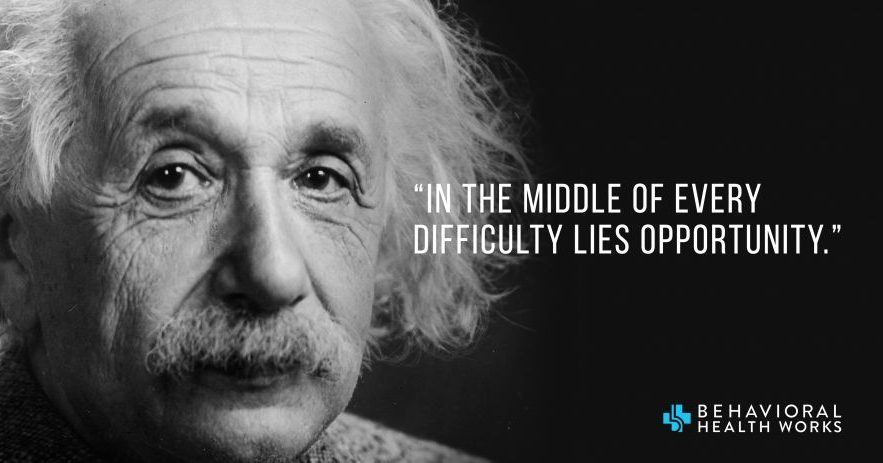

Albert Einstein's Quotation

Explanation:
When some people run into difficulty when venturing into new territory, they simply give up.
This new territory could be anything they have set out to do, and when they run into a roadblock they may try various solutions to work around the issues. But in time, they run out of ideas, or time, or patience and throw in the towel. (ie., “forgetaboutit”)
If something is easy to do/accomplish, then others would have already done what you attempting to accomplish.
And therein lies what Einstein referred to as an “opportunity”. The chance to solve a problem that others have attempted to address and abandoned. I personally like to call technical opportunities a “challenge”.
When you tell a scientist/engineer/hacker/whatever - there is no way to do xyz, you are basically waving a red cape in front of a bull. An opportunity to solve a problem/situation that seems insurmountable is very difficult to ignore.